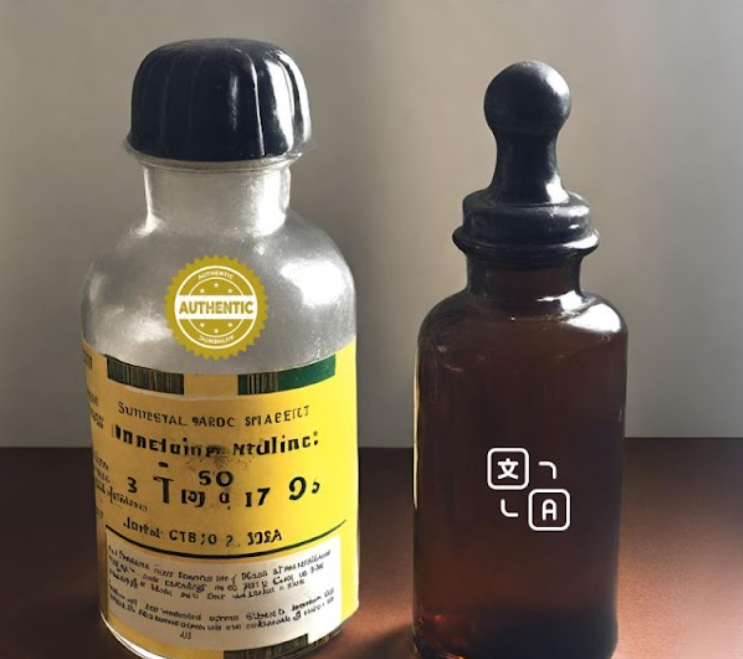

Un medicamento biosimilar se desarrolla como una versión muy parecida al medicamento biológico innovador, que ya está aprobado y disponible para los pacientes, una vez que la patente legal ha expirado. El medicamento que ya ha sido aprobado generalmente se denomina el producto de referencia o el producto originador, innovador u original.
Problemas específicos en la manufactura de proteínas El proceso de purificación y filtrado es crítico, este remueve proteínas que pueden ser inmunogénicas, así como potenciales virus que se encuentren dentro del producto. Desde allí, el proceso de llenado necesita ser completamente estéril, y el producto final necesita ser protegido de factores ambientales que puedan degradarlo. Finalmente, el transporte debe ser con cadena de frío para mantener el producto estable Impacto de las características moleculares sobre fármaco-cinética (PK) y la potencia La mayoría de proteínas terapéuticas existen en formas heterogéneas, a menos que sean moléculas muy pequeñas, por lo tanto, la pureza puede ser definida solamente como un término relativo. Los cambios pequeños potencialmente indetectables en la estructura molecular pueden tener efectos significativos en el perfil fármaco-cinético, el cual es la tasa a la cual una proteína es absorbida, distribuida a través del cuerpo, metabolizada o excretada. La distribución dentro del cuerpo puede ser afectada por la glicosilación. Influencia del tipo celular del huésped mamífero en las características moleculares La unión de los carbohidratos a las proteínas está determinada por la línea celular del huésped, las condiciones del cultivo, y las modificaciones de cualquier línea celular. Inmunogenicidad Se refiere al desarrollo de una respuesta inmune de un paciente en contra de una proteína terapéutica, los anticuerpos dirigidos en contra la terapéutica son usualmente vigiladas para detectar este tipo de respuesta. El efecto clínico del desarrollo de anticuerpos anti-producto puede ir desde un efecto de aclaramiento menor hasta una respuesta inmune neutralizante devastadora. Formas degradadas Con el tiempo las proteínas con cambios estructurales presentan cambios deletéreos e irreversibles. Estos cambios pueden ocurrir durante el cultivo celular, donde la degradación lenta puede eventualmente transpirar.
